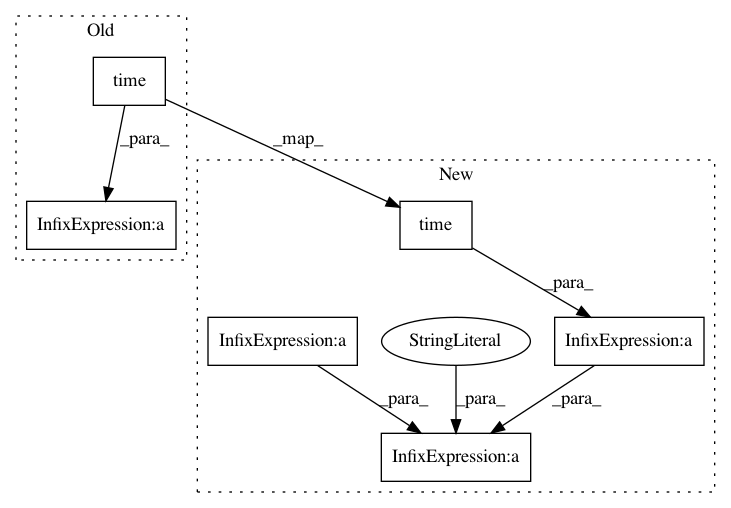

220718b125af17e34d1948dd99cdd0eb4a20347e,doc/examples/reconst_csa_parallel.py,,,#,20
Before Change
mask=None,
return_odf=False,
normalize_peaks=True)
end_time = time.time()
print("peaks_from_model ran in: " + str(end_time - start_time) + " seconds")
peaks_from_model ran in: 204.913657188 seconds
After Change
normalize_peaks=True,
nbr_process=4) //default multiprocessing.cpu_count()
time_parallel = time.time() - start_time
print("peaks_from_model_parallel ran in : " + str(time_parallel) + " seconds")
peaks_from_model_parallel ran in :62.6462249756 seconds
start_time = time.time()
csapeaks = peaks_from_model(model=csamodel,
data=data,
sphere=sphere,
relative_peak_threshold=.8,
min_separation_angle=45,
mask=None,
return_odf=False,
normalize_peaks=True)
time_single = time.time() - start_time
print("peaks_from_model ran in : " + str(time_single) + " seconds")
peaks_from_model ran in : 186.999890089 seconds
print("Speedup factor : " + str(time_single/time_parallel))
Speedup factor : 3.12166152529
In pattern: SUPERPATTERN
Frequency: 3
Non-data size: 6
Instances
Project Name: nipy/dipy
Commit Name: 220718b125af17e34d1948dd99cdd0eb4a20347e
Time: 2013-09-23
Author: girg2105@pc-0051-12.(none)
File Name: doc/examples/reconst_csa_parallel.py
Class Name:
Method Name:
Project Name: nipy/dipy
Commit Name: 220718b125af17e34d1948dd99cdd0eb4a20347e
Time: 2013-09-23
Author: girg2105@pc-0051-12.(none)
File Name: doc/examples/reconst_csd_parallel.py
Class Name:
Method Name:
Project Name: Kamnitsask/deepmedic
Commit Name: 93daab327fb9ae08678f8738f90c5b5b8a3c97a6
Time: 2019-05-10
Author: konstantinos.kamnitsas12@imperial.ac.uk
File Name: deepmedic/dataManagement/sampling.py
Class Name:
Method Name: load_subj_and_get_samples